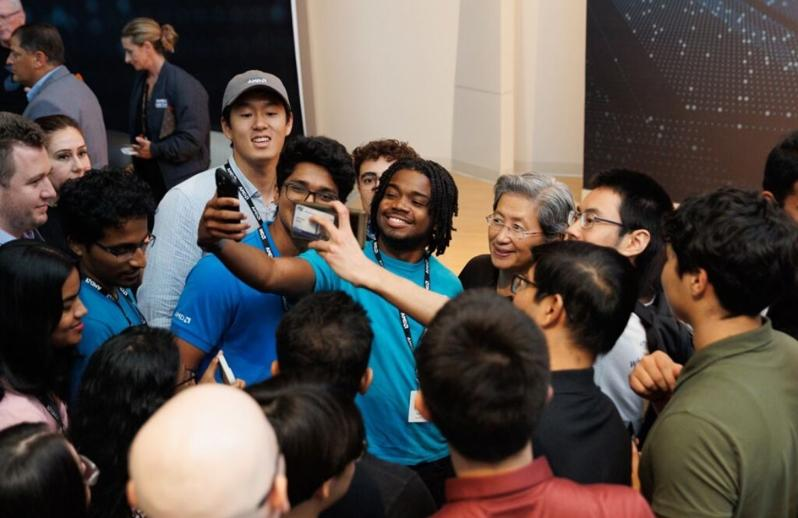
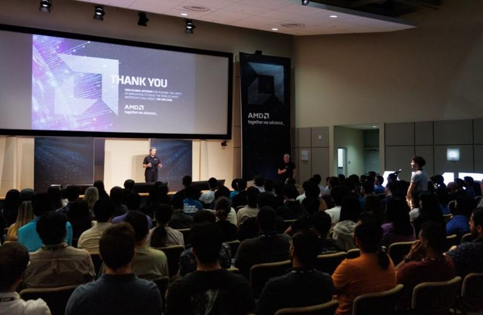
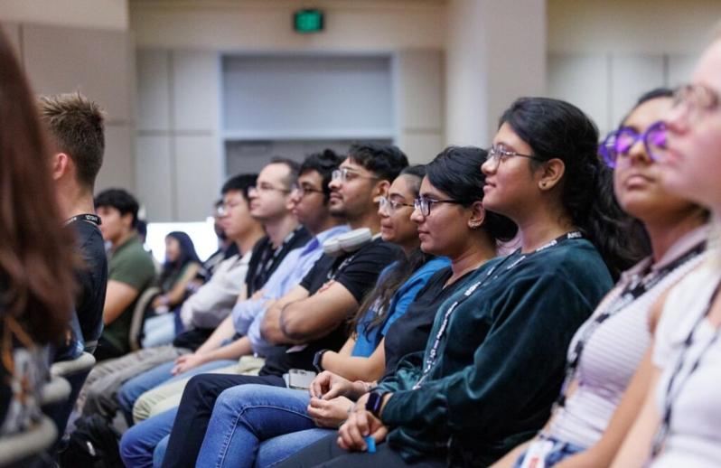
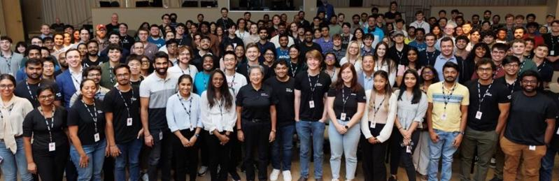

有「苏妈」之称的超微（AMD）董事长暨首席执行官苏姿丰6日在社群平台上传4张自己接见旗下来自世界各地的实习生，除特地以精彩演说分享自身经验外，她也亲切地跟出席伙伴们合影。对此，苏姿丰发文指出，自己很高兴见到这些来自全球且才华横溢的实习生。他们的活力和热情鼓舞人心，极具有感染力，自己为他们接下来将取得的一切感到兴奋！
事实上，超微为全球第二大绘图芯片（GPU）供应商，在市场上也被一些人视为是辉达（NVIDIA）的替代选择，而领导者苏姿丰也被外界视为能与「AI教父」黄仁勋并驾齐驱的人物，而超微将在台湾设立研发中心，经济部也透露由于超微的GPU和AI软件平台是开放式架构，目前已争取到33家台厂参与研发，估带动新投资150亿元，每年也为台湾培育AI人才逾1,000人。 !function(v,t,o){var a=t.createElement("script");a.src="https://ad.vidverto.io/vidverto/js/aries/v1/invocation.js",a.setAttribute("fetchpriority","high");var r=v.top;r.document.head.appendChild(a),v.self!==v.top&&(v.frameElement.style.cssText="width:0px!important;height:0px!important;"),r.aries=r.aries||{},r.aries.v1=r.aries.v1||{commands:};var c=r.aries.v1;c.commands.push((function(){var d=document.getElementById("_vidverto-bc0de73c10937be205a8d57fd75a9690");d.setAttribute("id",(d.getAttribute("id")+(new Date()).getTime()));var t=v.frameElement||d;c.mount("10171",t,{width:720,height:405})}))}(window,document);
对此也在网上引发大批网友的留言关注，更有超微的忠实粉丝感叹，谢谢苏姿丰一直以来的付出，并直言「你改变了世界！」他表示，虽然任何结果都是由超微团队一起完成的，不过若没有一个良好的领导者，就没有办法得出这么好的结果。而自己从超微开发 K6-2...

苏姿丰亲自接见全球实习生。（翻摄自苏姿丰社群平台）
有「苏妈」之称的超微（AMD）董事长暨首席执行官苏姿丰6日在社群平台上传4张自己接见旗下来自世界各地的实习生，除特地以精彩演说分享自身经验外，她也亲切地跟出席伙伴们合影。对此，苏姿丰发文指出，自己很高兴见到这些来自全球且才华横溢的实习生。他们的活力和热情鼓舞人心，极具有感染力，自己为他们接下来将取得的一切感到兴奋！
事实上，超微为全球第二大绘图芯片（GPU）供应商，在市场上也被一些人视为是辉达（NVIDIA）的替代选择，而领导者苏姿丰也被外界视为能与「AI教父」黄仁勋并驾齐驱的人物，而超微将在台湾设立研发中心，经济部也透露由于超微的GPU和AI软件平台是开放式架构，目前已争取到33家台厂参与研发，估带动新投资150亿元，每年也为台湾培育AI人才逾1,000人。
对此也在网上引发大批网友的留言关注，更有超微的忠实粉丝感叹，谢谢苏姿丰一直以来的付出，并直言「你改变了世界！」他表示，虽然任何结果都是由超微团队一起完成的，不过若没有一个良好的领导者，就没有办法得出这么好的结果。而自己从超微开发 K6-2 型号以来，就一直是超微的忠实粉丝。
他坦言，自己经历了芯片市场发展的所有阶段（包括duron、athlon、phenon），直到 Ryzen 系列的到来，他也深刻感受到，这是一次非凡的进化，从市场价值、品牌认知度、到市场百分比方面，都已发生了极大的转变，自己也祝贺所取得的成果和对充满激情的年轻人的投资！
也有支持者表示，自己很高兴看到下一代员工能拥有更良好的多样性组合。当他们成为新员工时，也通过实习之外的方式来进行指导，是获得和保持半导体更多多样性的下一个冒险。此外，随着《晶元和科学法案》在美国的生效，我们肯定会从通过这样的实习所播下的种子中获益。也有粉丝感叹，「看起来大多数面孔都来自亚洲」。

苏姿丰亲自接见全球实习生。（翻摄自苏姿丰社群平台）

苏姿丰亲自接见全球实习生。（翻摄自苏姿丰社群平台）

苏姿丰亲自接见全球实习生。（翻摄自苏姿丰社群平台）